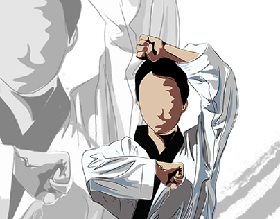
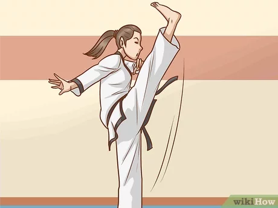
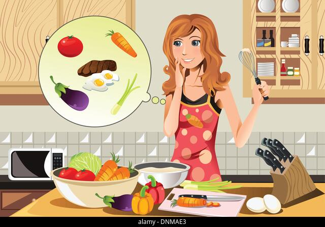
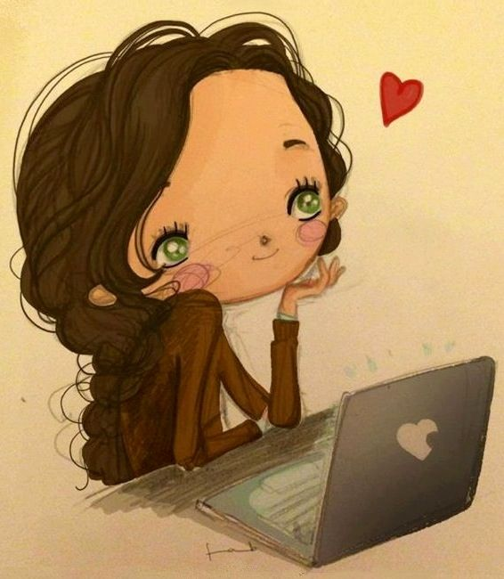
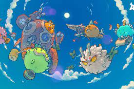
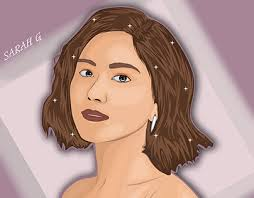

Purpose Fuels Passion
HOME
Skills

I feel that everyone of us has distinct abilities and talents, which is what makes us unique. People have abilities in a variety of areas, like playing an instrument, participating in sports, being artistic, acting, singing, and more. At various points in their lives, people become aware of their abilities. What distinguishes me is my willingness to give back to the community by sharing the skills I possess. Everyone has at least one skill that they excel in. The world becomes a masterpiece painting when everyone of us brings our particular abilities together.

I am proud to say my skills is playing taekwondo. In this sport there are two types of events the first one is poomsae. This event of poomsae is type of forms and perform types of forms like in karate. The second is sparring this is my part of my skills when it comes sparring there are two people that need wear safety gear and make fight then wear a red and blue armor. This event will show your techniques that I train for some months. In the event of sparring, you need to gain more score to win the fight. Next is I’m a lot of competition did I joined. But not in taekwondo that I build my skills also in volleyball but I choose to continue taekwondo.

I have been fortunate and blessed with the skill of playing taekwondo. And I love this gives me fun when I'm already playing. We train Monday to Friday if their necessary important competition. I know I went through a lot before I achieved the goal. But I did not hesitate to hone myself even more with the skills that God gave me. Especially with my family who provided support. Here I also learned that even if you stumble or have a hard time, just continue and you will get better and hone your skills if you don't give up.17But the important thing to know no matter situation we face choose to fight and what situation means when you are in the mats being a taekwondo player every second is very important. Why? Because those sweat part in training and hardest part don’t give to your opponent of an opportunity. Because is useless all of your hard work. That’s is the import part that I apply in life not in competition but in school and other part of my life.
GO TOP
Hobbies

A hobby is a person's favorite habit, activity, or what he or she chooses to do or what he or she enjoys doing in his or her free time. A hobby is a fantastic thing to have and may be gained at any age, from childhood to adulthood; however, it is sometimes preferable to begin early in life. We all participate in some type of activity that we like and that provides us joy and satisfaction; this activity is referred to as a hobby. Everyone has diverse hobbies since we have distinct interests, dislikes, and likes.
My hobby is reading books my age that I starting reading books is 9 years old. The first book that I read is all about love. I forgot the title but is all about in relationship. When you don't have any pals, life is challenging. When it comes to books, they can be the best companions we've ever had. Amazing Books, like a good buddy, improve our brain with great contemplations and facts. In the presence of literature, we cannot feel alone. While reading a good book, we may acquire a lot of useful information. Books written by well-known and experienced writers help us grow as individuals and show us how to serve the general public in the best possible way. When we are secluded from the rest of the world, we can usually acquire a book and start reading to relax
My second hobby is cooking I inspired my grandpa when it come cooking. He is very professional and excellent in cooking. I love cooking any dishes and vegetables. Cooking gave my childhood so much joy and bliss which made it one of my hobbies, I could cook all day and I get just happy at. Next is feed and play for my dogs. I love my dog and take him for a stroll at least once a day. I enjoy interacting with Max. Because I spend so much time with my animal companion, the dog prefers me to the rest of the family. My entire family and I believe that Max makes us happy when we are upset and that this pet is quite helpful around the house. He frequently rushes about my house, protecting it from burglars and murderers.
GO TOP
Interests

Nowadays, every action that individuals conduct in their everyday lives is linked to information technology. Definition of a collection of information technology tools, methods, and techniques used to gather, analyze, and present data, including coding or programming, data communications, storage and retrieval, system analysis and design, control systems, and associated equipment. Information technology, office automation, multimedia, and telecommunications are all included in this wide definition. Nothing is possible without technology these days. But, making it possible is a hard task. Information technology, one big asset to making technology possible, is the source of many of the apps we use today

My Interest in information technology is all about networking or sql and database. Maybe I'm not that good at programming. I know that creating programs are much difficult but I should strive more and do all my best for all of my ambitions. They’re that I'm still groping especially with errors. Communication, computer networking, computer-based systems, database administration, software development, website development, digital media, and electronic publication are all abilities I'd like to hone. These concentrations have equipped me with the knowledge and skills to plan, customize, and manage secure network and operating system configurations for optimum business applications, as well as plan, design, and maintain professional quality websites and internet applications for e-commerce and other business applications.

My second interest is all about nft game so what is nft games?. The “play-to-earn” movement is an emerging phenomenon in gaming, wherein players NFT games collect rewards within the game that can later be converted to real cash. Though this form of cryptocurrency has been around for a few years, it reached new heights during the coronavirus disease 2019 (COVID-19) pandemic, with ensuing lockdowns rendering millions jobless and open to earning money through gaming.12I started to interest in this nft games when lost my scholarship. Also, there is no easy to spend money or investing money because is not easy to earning in our situation of pandemic.14Being investor of nft games you need to search a lot before you invest. In nft games world there a quote that you need to put in your mind “you bring out what you can and you can lose”. My first nft games that Invest is PVU this game is a type of plant and for wedges watering plants in you earn energy you will convert it into real money but you need a lot patient in these games and also understanding for low currency exchange.17The next is axie also it so really hard because you need to get the quota but those nft games no need to invest you have to do is find some people that give scholar to play the games and axie is one of the example and if you want build a team you need money to buy a account. The last one is Pegaxy this is the type video karera but this is good to play and this game is really for me also in my tuition fee. In life sometime you have failed and success but don’t give to try until you catch your goal and don’t forget to pray for all things that you do.
GO TOP